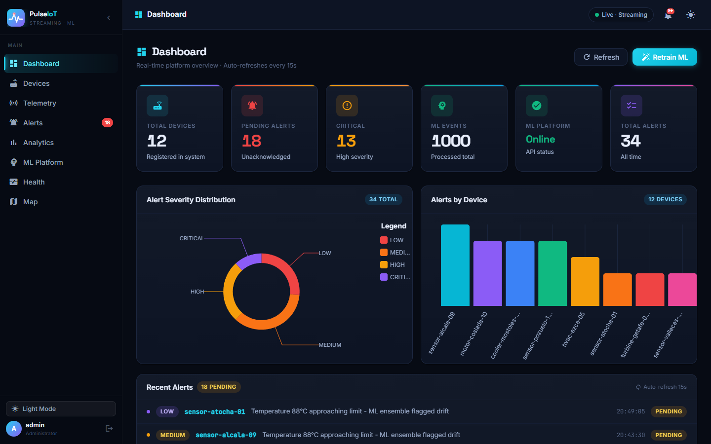
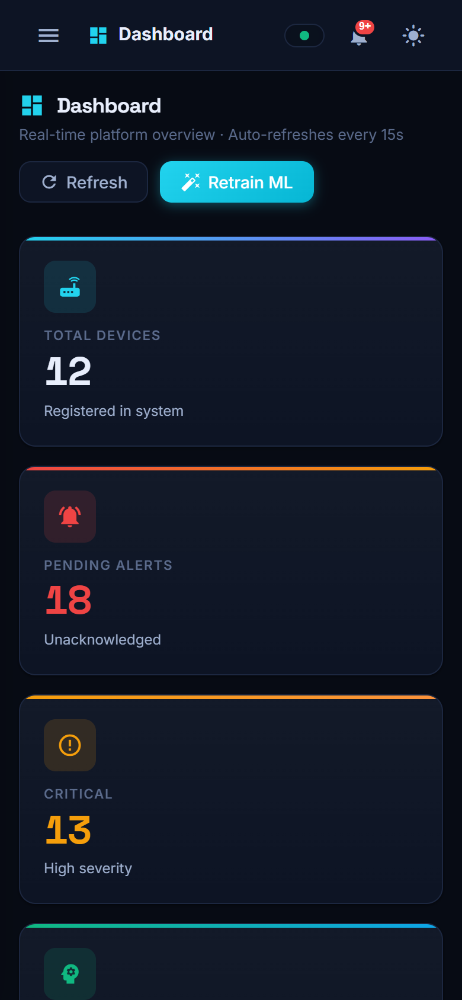
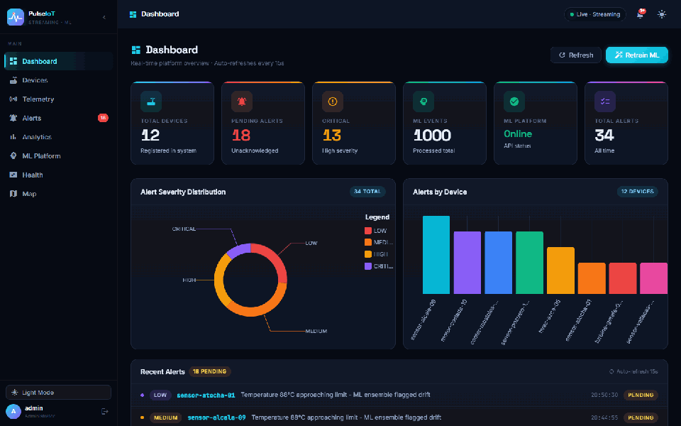

🧠
Ensemble anomaly detection
IsolationForest, rolling Z-score and trend detection vote on every reading. Auto-retrain runs on a schedule you control.
An event-driven platform where sensor data flows through Kafka and Spark, an ML ensemble flags anomalies in milliseconds, and a live Angular dashboard puts it all on a map.

compose upEvery hop is a Kafka topic. Services are decoupled, independently scalable and discoverable through Eureka.
device-data-receiveddevice-data-processeddevice-data-enrichedml-anomaliesIsolationForest, rolling Z-score and trend detection vote on every reading. Auto-retrain runs on a schedule you control.
Devices on a live map, draw polygons as areas, temperature heatmap and automatic high-risk zone highlighting.
Kafka topics end to end with PySpark rolling-window features, idempotent consumers and retry/backoff.
JWT auth, role-based access on the gateway, network-isolated internal services, rate limiting.
Redis-backed telemetry history, configurable alert rules, CSV export and a live notification centre.
Health dashboard, Eureka discovery, Prometheus + Grafana + Zipkin tracing wired into the compose stack.
Dark and light themes, responsive down to mobile.


The demo runs the real Angular app against an in-browser mock of the API — no install, no backend.